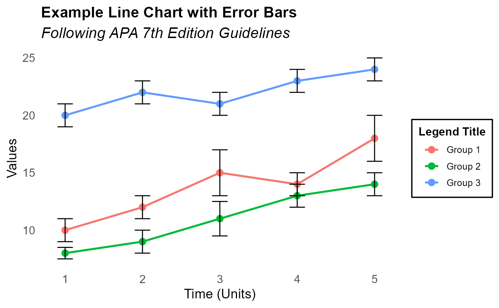

This function generates a line chart following APA 7th edition guidelines. It allows for the inclusion of error bars to represent variability in the data.
Usage
apa_line(
data,
x_var,
y_var,
group_var = NULL,
error_var = NULL,
title = "Title",
subtitle = "Subtitle",
x_label = "X-axis Label",
y_label = "Y-axis Label",
legend_title = "Legend Title",
save_as = NULL
)Arguments
- data
A data frame containing the data to be plotted.
- x_var
A string representing the name of the variable to be plotted on the x-axis.
- y_var
A string representing the name of the variable to be plotted on the y-axis.
- group_var
A string representing the name of the variable used for grouping lines. Default is NULL.
- error_var
A string representing the name of the variable for error values. Default is NULL.
- title
A string for the main title of the plot. Default is "Title".
- subtitle
A string for the subtitle of the plot. Default is "Subtitle".
- x_label
A string for the label of the x-axis. Default is "X-axis Label".
- y_label
A string for the label of the y-axis. Default is "Y-axis Label".
- legend_title
A string for the legend title. Default is "Legend Title".
- save_as
A string for the filename to save the plot. Default is NULL, which means the plot will not be saved.
Examples
# Example data for the line chart
lineData1 <- data.frame(
Time = rep(1:5, 3),
Value = c(10, 12, 15, 14, 18, 8, 9, 11, 13, 14, 20, 22, 21, 23, 24),
Group = rep(c("Group 1", "Group 2", "Group 3"), each = 5),
Error = c(1, 1, 2, 1, 2, 0.5, 1, 1.5, 1, 1, 1, 1, 1, 1, 1) # Example error values
)
# Create the line chart with error bars and boxed legend title
apa_line(
data = lineData1,
x_var = "Time",
y_var = "Value",
group_var = "Group",
error_var = "Error",
title = "Example Line Chart with Error Bars",
subtitle = "Following APA 7th Edition Guidelines",
x_label = "Time (Units)",
y_label = "Values"
)
#> Warning: package 'ggplot2' was built under R version 4.4.2
